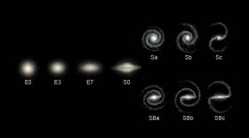

Las galaxias tienen cuatro configuraciones distintas: elípticas, espirales, lenticulares e irregulares. Una descripción algo más detallada, basada en su apariencia, es la provista por la secuencia de Hubble, propuesta en el año 1936. Este esquema, que solo descansa en la apariencia visual, no toma en cuenta otros aspectos, tales como la tasa de formación de estrellas o la actividad del núcleo galáctico.
